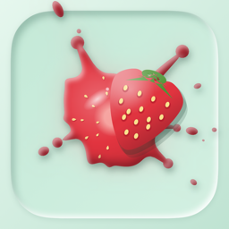

Splat
Every food your baby tries lands on their high-chair tray as a splat. By their first birthday, the tray is a picture of everything they tasted.
Tap the food, tap how it went, throw it. Splat keeps the count of 100 foods, a ring on foods that contain one of the nine major allergens, your reaction notes and photos, widgets and a Monday reminder, all free. One payment, which never renews, adds the time-lapse of the tray filling, the poster and its styles, your own allergen plan with reminders, a second caregiver and a PDF for your paediatrician.
No account. Everything stays on your phone.
Support
- Restore a purchase
- Open Settings in Splat (the avatars, top right) and tap Restore purchase, or tap Restore on the unlock screen. The purchase belongs to your Apple Account.
- Add the other parent or a grandparent
- In Settings, send the tray to a second caregiver. It goes as a file (AirDrop, Messages, email). When they open it in Splat on their phone, your foods and notes join theirs. Photos stay on your phone.
- A food is missing, or I logged the wrong one
- Tap the splat, then the bubble, then Edit or Wipe.
- Move to a new iPhone
- Splat's data is part of your normal iPhone or iCloud backup. Restore the backup on the new phone and the tray comes with it.
- Does Splat tell me what to feed?
- No. Splat keeps count and gives no medical or feeding advice. For questions about what, when or how to feed your baby, ask your family's health professional.
Anything else: alexandremanukyan1@gmail.com